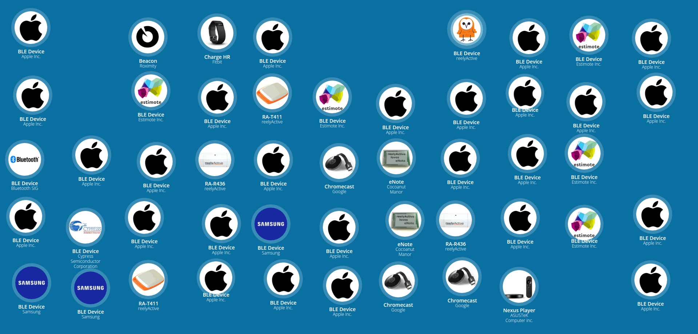
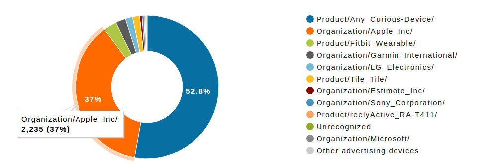
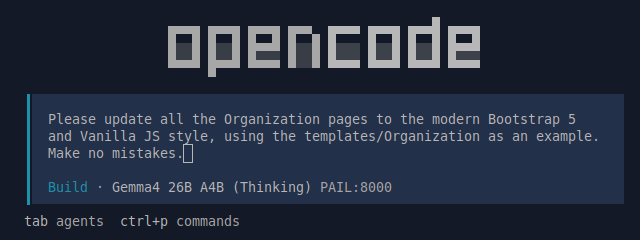

Sniffypedia, 10 years on…
On August 29th, 2026, Sniffypedia celebrated its 10th anniversary.
Back in 2016…
So many things, so many opportunities!
By 2016, radio-identifiable things had become a part of everyday life. Bluetooth Low Energy (BLE) found its way into our smartphones, catalysing a whirlwind of wearables and the beacons boom. A single BLE gateway might detect hundreds of devices within its human-scale range of tens of metres at any given time.

What were all these things? Fortunately, Bluetooth has well-documented assigned numbers for manufacturer-specific data and member services, which many of these things included in their payloads. 0x004c? That's Apple's company code. 0xfeed? That's Tile's service UUID. 0xfeaa? That's Google's Eddystone service which, among other things, allows anything to advertise a short URL for anything in range to look up.
Speaking of Google and looking things up via URL, by 2016, search engines were promoting JSON-LD & Schema.org as a standard means of embedding structured data in a web page to enrich search results. Perhaps it would become possible at scale to simply associate radio-identifiers with URLs and look up at least the name and image of the corresponding Organization, Product or Service? That was reelyActive's founding premise for Sniffypedia: we might need to seed the structured data for a while, but eventually the project would simply become an index that maps identifiers to URLs!
- 0x004c — www.apple.com
- 0xfeed — www.tile.com
- 0xfeaa — github.com/google/eddystone
- etc.
{
"@context": "https://schema.org",
"@id": "https://www.apple.com/#organization",
"@type": "Organization",
"name": "Apple",
"logo": "https://www.apple.com/...",
...
}
What's the big idea anyway?
Physical spaces that put things in context.
The big idea, in two words, is Hyperlocal Context. It becomes possible to automatically identify, sense and locate all these things at a human scale, in any physical space.
Consider the following example in retail, which was a promising vertical in 2016:
- the apparel item in the size and model you're looking for is associated with a RFID tag identifier
- the item is located in real-time using RFID reader infrastructure
- the nearest available changing room is sensed using a BLE occupancy sensor
Now imagine that example scaled to every physical space, enabling a Pervasive Sharing Economy. It was perfectly possible as at reelyActive we had developed open source technologies that could not only identify all wireless devices in a space and interpret any sensor data, but also locate those same devices: we were pioneers of BYOD RTLS.

There was cause for optimism: Google's Physical Web gave a taste of what might be possible when anything can "advertise" its digital twin to anyone or anything in close proximity. We used it to demonstrate how to "Advertise" yourself in any physical space, observing the same standard structured data principles (for a Person). Moreover Hyperlocal Context wouldn't depend on smartphones as ubiquitous radio-decoding infrastructure was on the horizon.
From 2016 onward, we would routinely discover new things, look them up, and add them to Sniffypedia.
The big anniversary idea
Let's complete the index using AI!
Fast-forward to 2026, and as of August, there are:
- approximately 0x110d or 4,365 company identifiers registered with the Bluetooth SIG
- approximately 726 member services registered with the Bluetooth SIG
Manually updating Sniffypedia is tedious, and new registrations for BLE alone have long outpaced what can be reasonably expected for a side project. Might we use Sniffypedia's tenth anniversary as an occasion to adapt the project to AI-assisted contributions and revisit/reinforce current standards? After all, AI and standards are two of the three key factors we identified for reelyActive's year ahead.

Indeed, we used opencode and a LLM—running locally on modest resources—to update all of the Sniffypedia pages to the latest Bootstrap 5 and Vanilla JS paradigm, maintaining a coding style that's easily human readable. However, when it came to updating the Sniffypedia index to simply point at Organization/Product/Service web pages, we realised there were problems that no AI could overcome…
Might need a new metric
"SEO what" if structured data isn't accessible on the Web!
Remember SEO (Search Engine Optimisation)? Well we naively believed that in 2026, the majority of companies would have useful structured data on their websites in the form of JSON-LD & Schema.org accessible to all users of the web. Nope!
We had planned to hand off the daunting task of looking up each organisation's URL and any embedded structured data to AI agents, but alas, looking at the early results, which we manually validated*, we found…
No structured data!
Perhaps a third of sites we checked had no embedded structured data to extract.
Nothing relevant!
Perhaps a third of sites with structured data that we checked had no Organization, Product or Service type(s), just WebSite and/or WebPage for SEO.
Forbidden 403!
A significant number of sites forbade access (and hence data) to Node.js code running server-side.
Denied by CORS!
Without exception, third-party sites implemented CORS policies denying access to JavaScript running client-side (in the browser).
Given that structured data is not always present, relevant or accessible, cleary the metric of success has changed.
"The project will complete successfully when only the index.js file remains relevant."
For software applications that require reliable access to relevant structured data about common radio-identifiable things, Sniffypedia's hosted content remains perhaps the only option on the Web!
* Side note: we found that the HTML files of modern webpages are not readily human-readable. Nonetheless, we at reelyActive strive to write human-maintanable HTML for our own projects, including Sniffypedia.
So, what's next?
In 2026, the answer to everything is AI, right?
As long as Sniffypedia continues to serve a purpose, which is the case even after ten years, it should continue to be maintained. Moving forward, Sniffypedia is better designed to accepted AI-assisted contributions, facilitating the addition of new content while freeing up the human maintainers to invest their time in more specialised activities.
The European Digital Product Passport—which at the time of writing has just become operational—may one day provide ample structured data about Products, Services and any implicated Organizations. But at the current pace of roll-out, Sniffypedia may well still be relevant when it comes time to again look back, 15 years on…